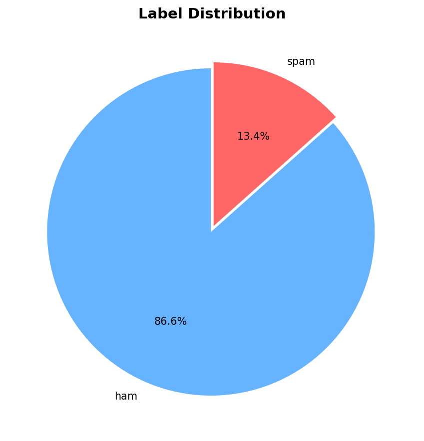
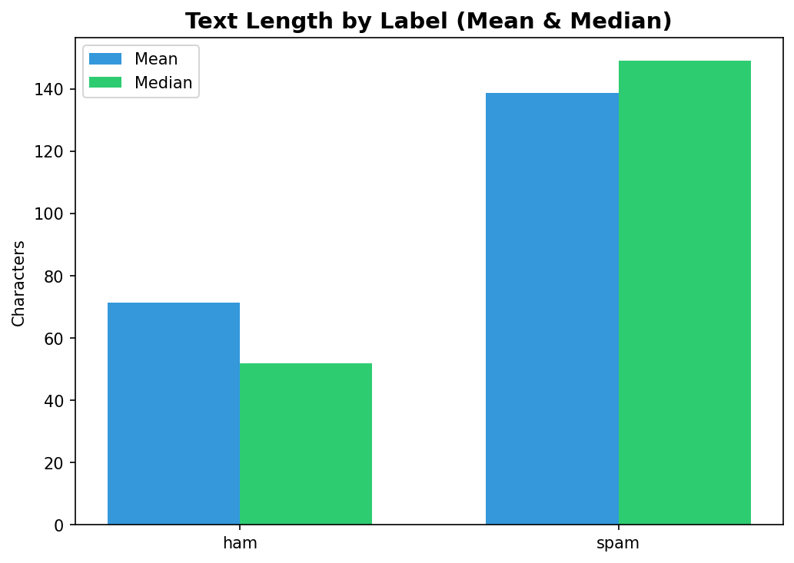
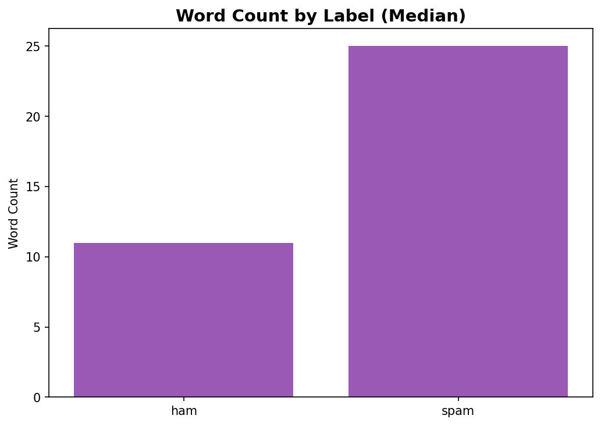
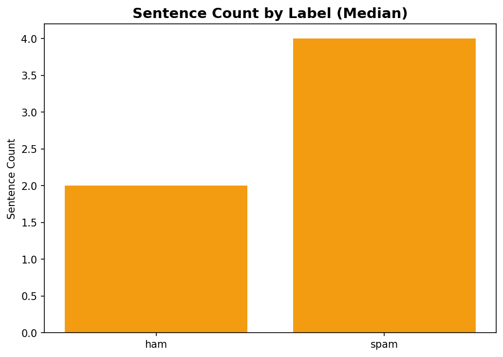
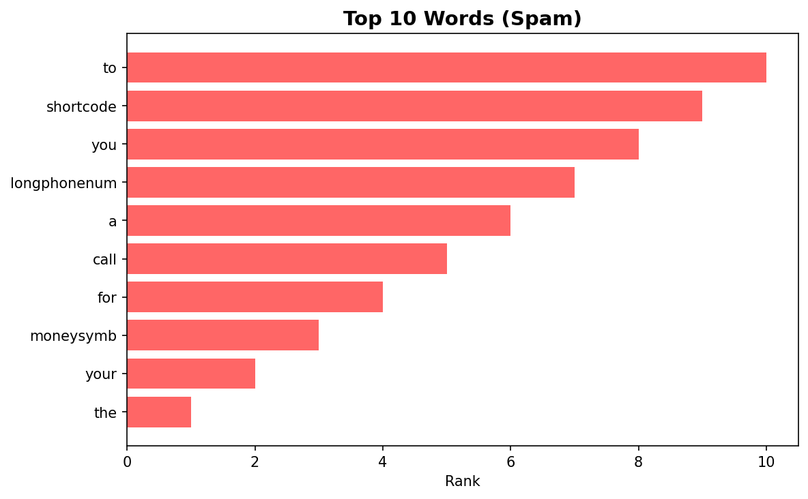
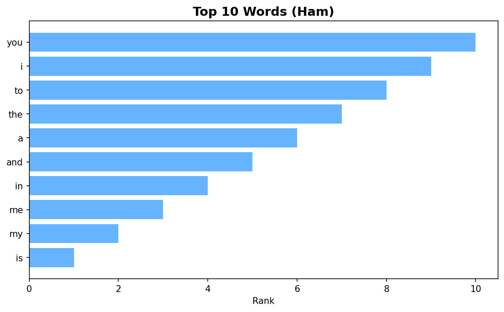
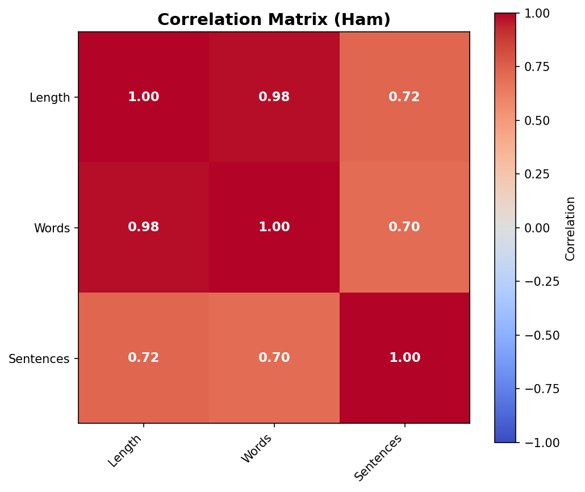
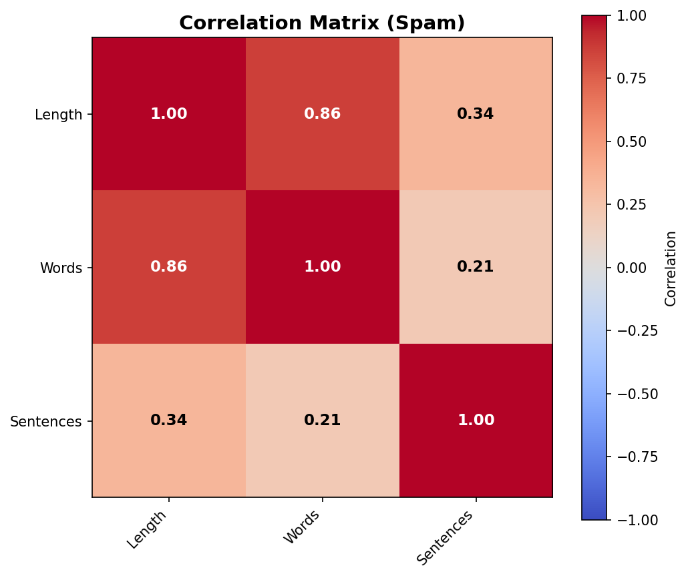

Analysis of 5,572 SMS messages: 4,825 ham (86.6%) and 747 spam (13.4%).
| Script | Description |
|---|---|
distribution.py | Count spam vs ham messages |
sms_length.py | Character count by label |
sms_word_count.py | Word count by label |
sms_sentence_count.py | Sentence count by label |
word_analysis.py | Top words (with stopwords) |
word_analysis_stop.py | Top words (no stopwords) |
ngrams.py | Bigrams & trigrams |
correlation.py | Feature correlations |
make distribution && make sms-length && make word-count && make sentence-count
make word-analysis && make word-analysis-stop && make ngrams && make correlationmake report-analysis # Combined figure
make report-images # Individual PNGs in analysis/img/
Ham: 4,825 (86.6%) | Spam: 747 (13.4%)
Class imbalance matters for model evaluation - accuracy alone is misleading.

Ham: median 52 chars | Spam: median 149 chars
Spam is nearly 3x longer. Strong discriminative feature.

Ham: 11 words | Spam: 25 words
Spam has 2x more words than ham.

Ham: 2 sentences | Spam: 4 sentences
Spam is more verbose with more sentences.

Keywords: shortcode, longphonenum, moneysymb, call
Anonymized tokens reveal spam indicators.

Keywords: you, i, my, me
Personal pronouns dominate legitimate messages.
Length-Word correlation: 0.974 | Length-Sentence: 0.713
Strong correlations between metrics.

Tight correlations (0.70-0.98) - natural proportional writing.

Weak sentence correlations (0.21-0.34) - different writing pattern.
| Metric | Spam | Ham |
|---|---|---|
| Length | 149 chars | 52 chars |
| Words | 25 | 11 |
| Sentences | 4 | 2 |
| Keywords | call, shortcode, moneysymb | you, i, my |
Spam: "prize guaranteed", "1000 cash", "urgent mobile"
Ham: "ll later", "let know", "good morning"
Insights inform features: TF-IDF (vocabulary), metadata (length, uppercase, exclamations), n-grams (phrases).
See ML README for model performance.